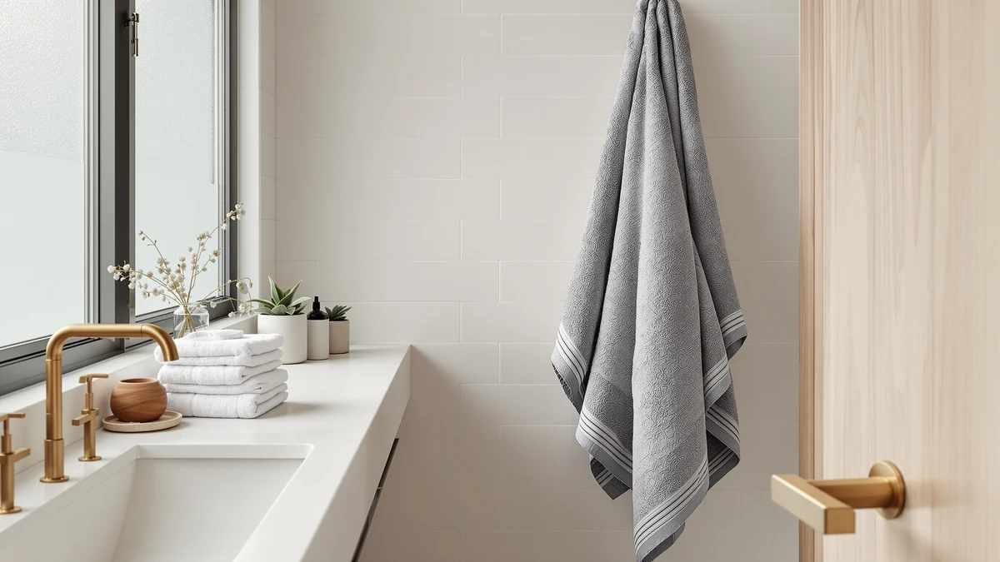

Best How to Keep Towels Soft (2026) | Best Bath Towels
Prices and picks verified as of August 2026. Independent, reader-supported reviews.


Things to Know Before You Buy
- Less detergent, not more. Leftover soap is the top reason towels feel stiff, so a smaller dose usually fixes the problem faster than any product you can add.
- Fabric softener works against you. The coating that makes towels feel slick in the dryer also blocks them from absorbing water and traps residue over time.
- White vinegar is the cheap fix. Half a cup in the rinse strips buildup and mineral deposits for a few cents a load, with no smell left behind.
- Heat is the enemy of loft. Drying on high and overdrying both scorch the cotton loops, so low heat and an early pull keep towels plush.
- Fiber quality sets the ceiling. A worn-out blend will never feel like new, so once you have done the laundry fixes, a long-staple cotton towel is the upgrade that lasts.
If you want to know how to keep towels soft, start in the laundry room. A pricier towel helps a little, but how you wash and dry the one you own matters far more. Towels start out plush and turn crunchy because soap, fabric softener, and hard-water minerals slowly coat the cotton loops that trap air and water. Strip that buildup away and dry the towels gently, and a $15 set will feel close to the spa towels you paid four times as much for.
You can fix most of the problem this weekend. The routine below takes five steps, costs about $12 in vinegar and dryer balls, and works on the towels you already own. The steps below cover the exact detergent dose, the rinse trick that does most of the work, and the drying habits that leave a towel fluffy instead of matted. At the end you will find three towel sets we reach for when a set is worn out and worth replacing.
What You'll Need
- Supplies: liquid laundry detergent, distilled white vinegar, baking soda
- Tools: washing machine, wool dryer balls
Step 1: Use half the detergent you normally would
The single biggest reason towels feel stiff is too much detergent. Most people pour to the top line on the cap, but that line is set for heavily soiled clothes, not towels. Towels are thirsty, so they grab onto excess soap and hold it deep in the loops, where the rinse cycle cannot reach all of it. Over a few months that trapped soap dries into a crusty film, and that film is what scratches your skin.
For a full load of towels, use about a tablespoon of liquid detergent, or roughly half of what the cap suggests. If you keep this up and your towels still feel soapy, drop to two teaspoons. You are not under-cleaning them. Towels carry far less dirt than a pair of jeans, and a smaller dose rinses out cleanly so the cotton can fluff back up.
Wash towels on their own when you can, in warm water rather than hot, and avoid cramming the drum. A load that can tumble freely rinses better than a packed one, and that extra room helps the last of the soap wash away.
Step 2: Stop using fabric softener
This one feels backward, because softener is sold as the thing that keeps towels soft. In the short term it does add a slick, pleasant hand. The problem is what it leaves behind. Liquid fabric softener and dryer sheets coat fabric with a thin layer of silicone and oils, and that waxy layer is exactly what you do not want on a towel.
The coating builds up wash after wash. It seals the cotton so water beads on the surface instead of soaking in, which is why a softener-treated towel can feel plush yet leave you damp after a shower. The same buildup eventually goes hard and traps odor, so towels start to smell musty even straight out of the dryer.
Cut softener out completely and your towels will feel less slick for the first wash or two, then noticeably better as the old residue clears. To keep them soft without it, you will lean on the vinegar rinse and dryer balls in the next two steps, which deliver the fluff softener promises without the gummy film.
Step 3: Add white vinegar to the rinse
Distilled white vinegar is the cheapest and most effective way to keep towels soft. It is a mild acid, so it dissolves the alkaline soap film and the calcium and magnesium deposits that hard water leaves on cotton. Strip those two layers off and the loops spring back open, which is what gives a towel its fluff and its grip on water.
Pour half a cup of plain white vinegar into the rinse compartment, or add it by hand at the start of the rinse cycle if your machine does not have a dispenser. Do not mix it with detergent or bleach in the same step, and do not worry about the smell, because vinegar rinses out fully and your towels will not smell like a salad. If your water is very hard, you can run a vinegar-only wash once a month as a reset.
Skip this step and the other four still help, but vinegar is the part that does the real work on towels that have already gone stiff. Used every few washes, it keeps soft towels soft and slowly rescues the ones that are not.
Step 4: Dry on low heat with wool dryer balls
How you dry a towel matters as much as how you wash it. High heat feels efficient, but it bakes the cotton fibers brittle and flattens the loops that hold air. Set the dryer to low or medium and give the load more time instead of more heat. The towels come out softer, and the fabric lasts longer.
Add three wool dryer balls to the drum. They bounce between the towels as the load tumbles, which keeps the layers from clumping and lifts the pile so warm air moves through every loop. That mechanical fluffing is what fabric softener was supposed to do, except the balls leave no residue, cut drying time by ten to fifteen minutes, and last for years. Tennis balls work in a pinch but can shed fuzz, so wool is the better buy.
If you prefer line drying, shake each towel hard before you hang it and bring it in while it still has a little give, then finish with a five-minute tumble and the dryer balls to knock the stiffness out. That hybrid approach keeps towels soft even if you hang them outside.
Step 5: Pull towels before they fully overdry
The last step to keep towels soft is also the easiest to get wrong. Once a towel is dry, every extra minute in a hot drum works against you. The fibers have no moisture left to protect them, so the heat scorches the surface and welds the loops into a crunchy mat. That is why a towel left in a finished cycle for an hour comes out stiffer than one you pulled on time.
Take the towels out while they still feel barely damp, then fold them or hang them to finish in the air for a few minutes. They will be dry to the touch within ten minutes and far softer than if you had run the cycle to the bitter end. If your dryer has a moisture sensor, use the automatic setting rather than a fixed long timer, since the sensor stops the load at the right point.
Get into this habit and you protect all the work from the first four steps. A clean, residue-free towel that comes out of the dryer with its loops intact is the soft towel you were after.
Common Mistakes to Avoid
The fastest way to undo your work on how to keep towels soft is to reach for more product. People who notice stiffness often double the detergent or add a second softener, which feeds the buildup that caused the stiffness in the first place. If your towels feel off, strip them with vinegar before you add anything.
Washing towels with the rest of your laundry is another quiet mistake. Towels shed lint and need their own rinse, and tossing them in with sheets or clothes means leftover softener from those items transfers onto the towels. Run towels as a separate load so they get a clean rinse and tumble freely.
Overloading the dryer ranks just as high. A packed drum traps damp spots, so you crank the heat or run a second cycle to compensate, and both of those scorch the cotton. Dry towels in smaller loads on lower heat instead. Skipping the shake-out before drying also matters, since a wadded wet towel dries into a stiff brick no matter what setting you use.
Finally, do not expect laundry tricks to rescue a towel that is finished. Once the loops are worn flat and the edges fray, no vinegar rinse brings them back, and chasing softness on a dead towel wastes water and time. Recognize when a set has reached the end and replace it.
Our Top Picks
The laundry fixes above keep towels soft, but they cannot revive cotton that is worn out. When a set has gone thin and frayed past saving, a towel woven from long-staple cotton starts soft and stays that way through the routine in this guide. These are the three we reach for, at three price points.

Editor’s Pick
American Soft Linen Luxury 4
Long-staple Turkish cotton that comes out of the wash plush and absorbent. Skip the softener and it holds its loft for years, which makes it our go-to soft towel.
$39.99
Check Price on Amazon
Best Value
White Classic Luxury Bath Towels
Ring-spun cotton with a hotel-style weave that rinses clean and stays fluffy on a low-detergent wash. You get a durable, soft towel without paying a premium price.
$44.99
Check Price on Amazon
Premium Choice
NALIVO Extra Large Bath Towel
An oversized, thirsty towel that dries fast enough to dodge the musty stiffness damp towels pick up. The size and quick-dry weave make it the splurge that stays soft.
$54.98
Check Price on AmazonFrequently Asked Questions
Why do my towels get hard and scratchy?
Towels turn hard and scratchy when detergent and fabric softener build up on the cotton loops and when hard-water minerals coat the fibers. Too much soap, dryer sheets, and overdrying all compress the loops that give a towel its plush feel. Cutting the detergent, switching to a vinegar rinse, and drying on lower heat reverses most of that stiffness and helps keep towels soft going forward.
Does vinegar really make towels softer?
Yes. Half a cup of distilled white vinegar in the rinse cycle dissolves the soap film and mineral deposits that stiffen towels, and it does so without the buildup that fabric softener causes. The vinegar smell rinses out completely, so towels come out softer and more absorbent rather than vinegary. Use it every few washes to keep towels soft.
Can you make old stiff towels soft again?
Most stiff towels recover with a deep-clean reset. Wash them once in hot water with one cup of white vinegar and no detergent, then run a second cycle with half a cup of baking soda. Dry on low with wool dryer balls. Two strip-wash cycles strip years of residue and bring back a surprising amount of softness on towels that still have intact loops, though a frayed, worn-out set is past saving.
Should you wash new towels before using them?
Yes, wash new towels once before the first use. Manufacturers apply finishes and softeners that make towels look good on the shelf but block absorbency, so that first wash with a little detergent and a vinegar rinse removes the coating. Your new towels will feel slightly less slick at first and then become softer and far more absorbent over the next few washes.
How often should you wash towels to keep them soft?
Wash bath towels after three to four uses, or about once a week for daily use, and hang them to dry fully between showers. A towel that stays damp grows bacteria and stiffens, so airflow matters as much as the wash. Washing on schedule with a small detergent dose and a periodic vinegar rinse keeps towels soft without wearing the fibers out from over-washing.
Verdict
Keeping towels soft is mostly about using less product and drying with a gentle hand. Use half the detergent, drop the fabric softener, rinse with white vinegar, dry on low with wool dryer balls, and pull the towels before they bake. None of it costs much, and the change is obvious by the second or third load. The vinegar rinse does the most work on towels that have already gone stiff, while the smaller detergent dose and gentle drying keep soft towels soft. If your set is worn out, the American Soft Linen Luxury towels start plush in long-staple Turkish cotton and hold that feel through this exact routine, which makes them the easiest upgrade to recommend. Pair the right towel with the right laundry habits and you stop fighting crunchy towels for good.